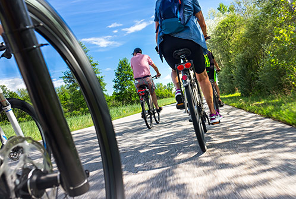

Our Tours
The Bozeman area is, in our humble opinion, the best place in the world to ride mountain bikes. We love it so much that we want to share the experience with as many people as possible. Our guides are anxious to lead you on a cycling adventure up hills, across streams, or down the block. No matter what your skill level, we aready to get your blood pumping and your love for mountain cycling growing.
The Rookie Ride

This guided tour comes free with the purchase of any new or used bike. In fact, the only way you can take it again is to convince a friend to buy a bike and start riding. Available any time the store is open, the Rookie Ride starts in our parking lot where we help get your new bike and helmet properly setup for you. Then we ride down Valley Commons Drive until everyone is comfortable. The Bozeman Pond Trail is nearby and provides just the right amount of mountaininess (is that a word?) for newbies. You won't be an expert when we get back to the store an hour later but you'll be comfortable with your bike.
Bangtail Divide Ride

Images and display code via trg and MTB Project
Stop by the store and sign up for this ride through beautiful country along gently sloping terrain. It's easy enough for new riders but will still give you a good workout and help you learn more about becoming one with your bike. Plan on spending most of the morning on this 25 mile trail.
The ride starts at 9:00am every morning except Sunday. The $26.00 fee covers water (you get to keep the bottle with our logo on it), an energy bar, a donation to the Preserve Our Trails project, and a few dollars to encourage our guide to get out of bed early.